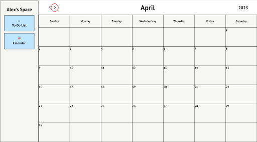
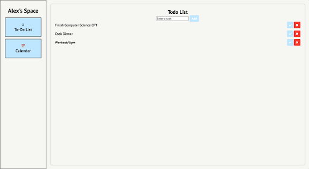

How To Use System Spaces
Welcome to System Space
This is YOUR all in one organizer for your life whether that is work, school, life, groceries, or even training schedules. With System Space, you can become the most productive and balanced version of yourself. Let's work together to help you achieve fulfillment and happiness in your day to day.
This first screen that you are on right now is the “Welcome” screen here you will find a user manual with instructions and directions that will cover all the different functions of System Space. There are two main modules of System Space: #1 Scheduling Calendar and #2 To-do list Task Tracker. With these two parts, you will be able to better organize your life. Using the left side bar you will navigate the site. To enter the “To-Do List” bring your cursor onto the left side and click into the blue box that reads “To-Do List”. To access the “Calendar”, you also look to the side bar and click the blue box that reads “Calendar”.
The Calendar
Adding Tasks
You can add an event, task or reminder to one of the days on the calendar.
-
Click on the cell you would like to add an item
-
Once clicking on it a pop-up alert will appear reading “Please enter a title for your task:”, write in the task.
-
Press the key “enter” or “OK” to confirm.
-
Now, your task will appear in the space you selected.
Switching Between Months
- At the top left of the calendar there are 2 arrows: back and forward. This allows you to switch between months and years.
-
If you click the left arrow, the calendar will flip to the previous month.
-
To advance to the next month click on the right arrow.

Deleting Tasks
When you have completed a task or you want to make changes to the task you can delete it and add a new one.
-
On the calendar and in the day cell which has an event look for a purple trash can icon.
-
Press this icon to delete the item from the calendar.
The To-Do List
The System Space to-do list is the ultimate task tracking application that allows you to manage and prioritize tasks in a productive manner.
Adding a Task
You can add tasks to the todo list in the order you need to get them done or to help you remember important tasks.
-
Click on the user input space where it reads “Enter a task”.
-
Enter in the task you need to complete.
-
Press “Add”
-
Repeat for as many tasks as you need to complete.
Completed Tasks
When you have completed tasks and you don’t want to delete them from the page you can complete them instead.
- On the right hand side of each item look for a white checkmark with a blue surrounding.
-
Click the blue checkmark.
-
A line should appear across the task item; this display shows the task has been completed.
Deleting Tasks
If you made a mistake or would like to eliminate an item from the to do list you can do that by deleting it from the list.
- Locate the red “X” button on the right side of each item.
-
Press the red “X" button.
-
The item will be deleted from the list and will not reappear.
